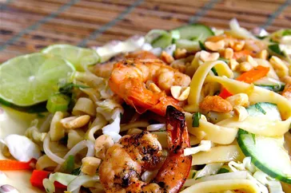

Home
Saigon Noodle Salad

Recipe by Dredge | Updated on January 19, 2023
These Saigon Noodle Salad are a great change from regular Mexican-style tacos.
A quick, cool summer dinner made with leftover rotisserie chicken. Naturally,
you can use any type of chicken cooked the way you like;
just be sure
to shred it for real tacos.
Description
Prep Time:
20 mins
Cook Time:
5 mins
Total Time:
25 mins
Servings:
4
Yield:
8 tacos
Ingredients
- ½ cup ranch dressing
- ¼ cup reduced-fat sour cream
- 1 (1 ounce) packet taco seasoning mix,
divided
- 1 tablespoon mild chunky salsa
- 2 cups shredded rotisserie chicken
- 8 (6 inch) corn tortillas
- shredded lettuce
- 1 tomato, chopped
- 4 green onions, sliced
- 1 (4 ounce) can sliced black olives
- 1 avocado - peeled, pitted and diced
(Optional)
- 1 cup shredded Colby-Monterey Jack
cheese
Directions
- Step 1
Combine ranch dressing, sour cream, 1 teaspoon taco seasoning, and salsa in
a small bowl. Cover and refrigerate until serving.
- Step 2
Toss chicken with remaining taco seasoning. Cover bowl loosely with wax paper
or plastic wrap. Microwave chicken until chicken is heated through, about 2 to 3
minutes.
- Step 3
Warm tortillas in a skillet for about a minute on each side to make them pliable.
Place a scoop of chicken on the tortilla and top with lettuce, tomato, green
onion, olives, avocado, cheese, and a spoonful
of the ranch dressing mixture.